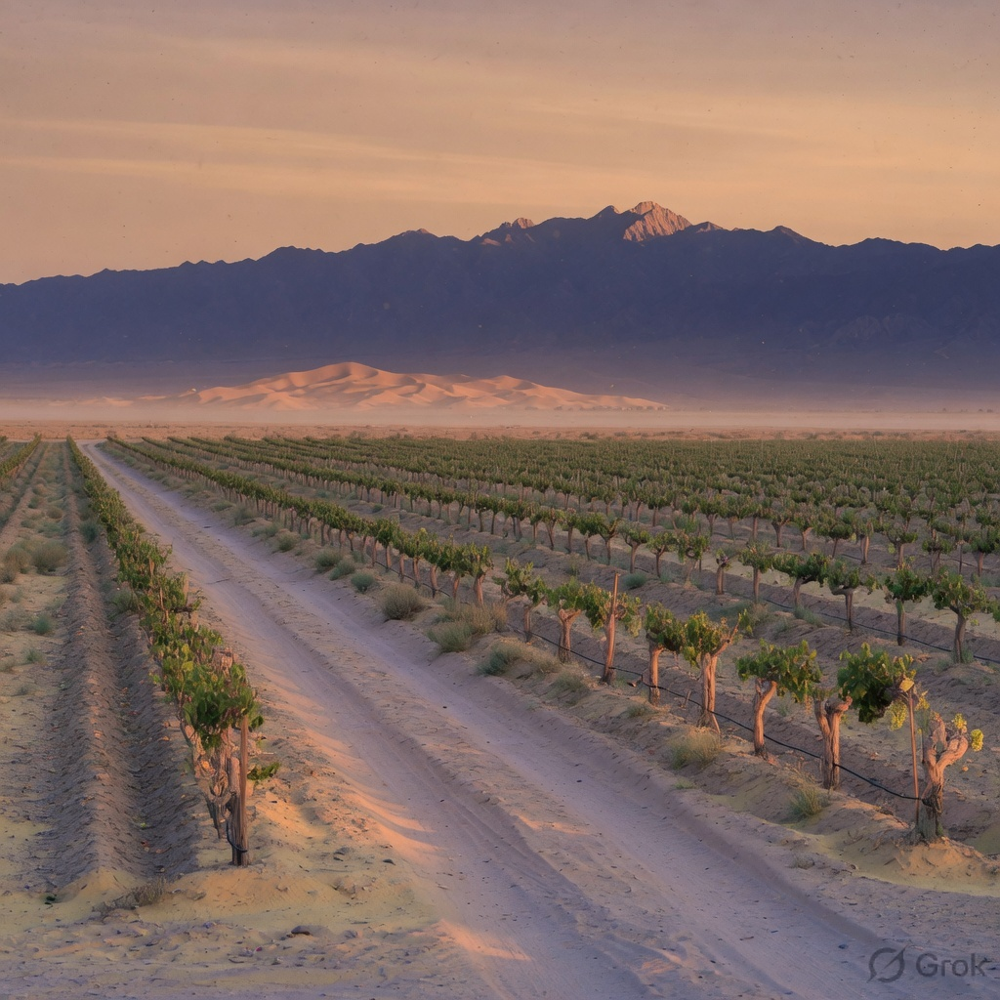

North of the mountains. South of the open desert. Not a soft place to farm.
The Tian Shan Beilu belt runs along the northern foothills of the range. Changji is one of the towns in that line. We plant here because the light is hard and the nights cool down.
Rain is scarce. Irrigation is careful. Disease pressure is low. That is why organic farming is not a performance — it is the practical choice.

Regional figures for the Beilu belt. Our blocks sit inside this climate.
Same broad band as parts of southern France and northern Italy — different weather, same long days.
High light builds colour and sugar. Night drop keeps acid from collapsing completely.
Less rain means less mildew. More work on water and soil. That trade-off is the whole point of this region.
Black fruit and plum, sometimes stewed cherry. Heat is there. Water is not free, so the berries do not get lazy.
Syrah and Cabernet both pick up savoury notes — green herb, cracked pepper, sweet spice when oak is careful.
Skins thicken under sun and cool nights. The best bottles need food and air. That is a feature, not a flaw.
Own vineyards. Organic demonstration blocks. Cellar on site. If you want the technical sheet for a vintage, ask — we will send what we have, not a fiction.